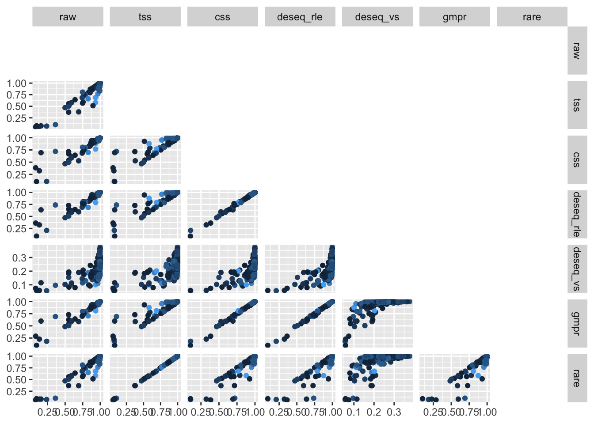
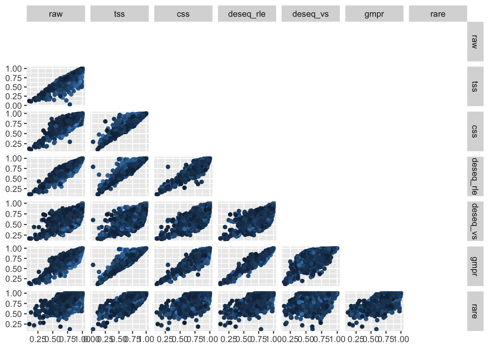

Chapter 11 Comparisions
See all distance comparisions for Global patterns data
## Registered S3 method overwritten by 'GGally':
## method from
## +.gg ggplot2data.frame(raw = as.numeric(phyloseq::distance(gp_raw, "bray")),
tss = as.numeric(phyloseq::distance(gp_tss, "bray")),
css = as.numeric(phyloseq::distance(gp_css, "bray")),
deseq_rle = as.numeric(phyloseq::distance(gp_deseq_rle, "bray")),
deseq_vs = as.numeric(phyloseq::distance(gp_deseq_vs, "bray")),
rare = as.numeric(phyloseq::distance(gp_rare, "bray")),
tmm = as.numeric(phyloseq::distance(gp_tmm, "bray")),
diff = as.numeric(dist(get_variable(gp_raw, "depth")))) %>%
ggpairs(columns = 1:7, upper = "blank",
diag = "blank",ggplot2::aes(colour=diff))
See all distance comparisons for Kostic data
data.frame(raw = as.numeric(phyloseq::distance(k_raw, "bray")),
tss = as.numeric(phyloseq::distance(k_tss, "bray")),
css = as.numeric(phyloseq::distance(k_css, "bray")),
deseq_rle = as.numeric(phyloseq::distance(k_deseq_rle, "bray")),
deseq_vs = as.numeric(phyloseq::distance(k_deseq_vs, "bray")),
rare = as.numeric(phyloseq::distance(k_rare, "bray")),
tmm = as.numeric(phyloseq::distance(k_tmm, "bray")),
diff = as.numeric(dist(get_variable(k_raw, "depth")))) %>%
ggpairs(columns = 1:7, upper = "blank",
diag = "blank",ggplot2::aes(colour=diff))